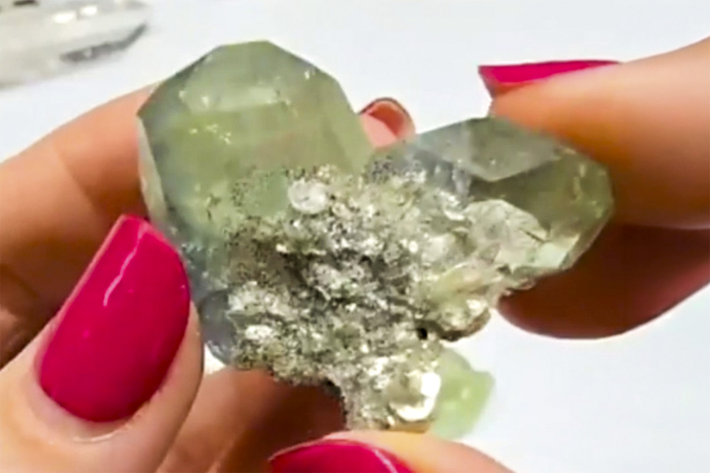

Beryl
"Aquamarine on Muscovite"
VIII-10425
Unassigned
Purchased 5/25/2026 from Barnett Fine Minerals for $120.00
Core Collection • In Collection
Details
Storage Type: Drawer
Storage Location: C1D1 The First Drawer Miniatures
Size class: TBD (0)
Dimensions: Unrecorded
Mass: Unrecorded
Luster: Unrecorded